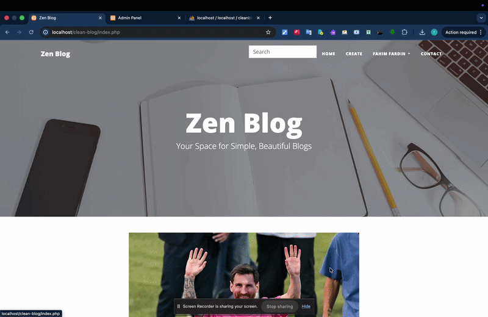

ZenBlog
A PHP publishing platform that connects writing, categories, reader comments and a moderation-focused admin panel.

Why I built it
I wanted to move beyond static HTML pages and learn what makes a website into a content system. A blog was a useful starting point because it involves multiple users, records that change over time, discovery through categories and search, and a review process for comments.
Who I designed it for
Readers exploring posts and categories; registered authors creating and editing their own posts; and administrators publishing/unpublishing posts and moderating reader comments.
The core user journey
How I approached the problem
I focused on connecting the important user tasks to working application and data flows.
Start with content data
I organised posts, categories, users and comments as MySQL records rather than hard-coding article pages.
Create author workflows
I built PHP pages for registration/login, post creation, image uploads and post updates, including checks for the post owner.
Build discovery features
I surfaced active posts, category pages and search so readers could navigate content without knowing the underlying URLs.
Add moderation
I handled comments as pending by default and exposed admin controls for approving comments and changing post visibility.
Why I chose this approach
Plain PHP with PDO was a deliberate learning route for understanding the full form → server → SQL → HTML cycle. Prepared statements help separate input from SQL, and visibility/moderation states allow content to be reviewed before it appears to readers. Bootstrap keeps the responsive layout straightforward.
The result, without inflated numbers
A locally runnable content-management prototype with author CRUD, category/search pages, image-backed posts, user sessions, an admin panel and comment moderation. I did not measure readership or publish it as a live editorial product.
What I learned while building
This project taught me why content ownership and moderation belong in the database design, not only in the page layout. Reviewing the code also highlighted further work I would do on security—especially standardising prepared statements and CSRF protection across all admin actions.
What I would improve next
Harden all state-changing actions with CSRF protection, tighten upload checks, centralise authorization and introduce automated tests for author and admin permissions.
A closer look at the project
These previews help explain the interface and flow. They are labelled honestly where fictional data or simulated behaviour is involved.